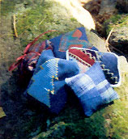

I like to make fragrant balsam bags for Christmas gifts or stocking stuffers. You can recycle your balsam fir Christmas tree or wreath for next year's gift. Balsam fir has the aroma associated with Christmas greens and wreaths: like a walk through a moist, cool, pitch-laden grove of evergreens on a warm summer day.
If you use green needles, you will have to pluck or cut them off the stem. I prefer to use the needles when dried and brown. To remove the needles, take a handful of branches and squeeze and twist over newspaper for easy collection. If balsam is not available, you could use cedar chips or an aromatic herb, such as lavender.
The bag itself is square in shape. Decoration can be simple or elaborate. The bag could have an embroidered design, a painted one, or whatever you like! Pretty fabric could be used by itself and tied with a ribbon. A holiday shape can be cut out and appliqued to one side of the bag or a patchwork block could be used.
Take two squares of fabric, pin decorated sides together. Sew three and one-half sides shut either by machine or by hand. Turn right side out and stuff with needles. With fine stitches, sew the opening shut and you are finished.
In addition to making your drawers smell nice, the balsam bags can be used to store sewing needles or, if the bag is stuffed loosely, a fine coaster for a hot cup of tea.
ELIZABETH R. BORCH
Hope, Maine
|
 Homemade balsam pillows bring the smell of Christmas to the whole year. |
|
|